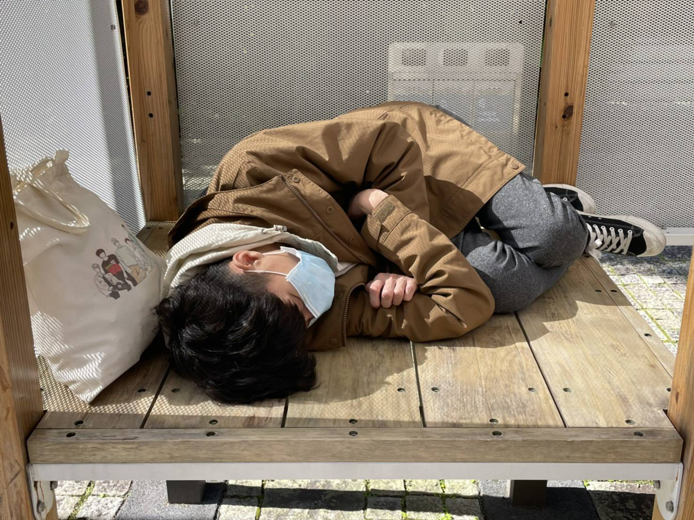

回歸最初悸動 《光的胎動》領觀眾探索生命之源
2020-10-21 徐嘉璟
#油水投影
#胚胎
#環境音
【記者徐嘉璟綜合報導】黑暗的空間響起低沉穩健的胎動聲，彩色泡泡不停地游移在如繭一般的球體上。美國麻省理工學院（Massachusetts Institute of Technology, MIT）藝術、文化與科技學程研究生紀柏豪與藝術家謝欣翰、康力升等人合作，於15日起在手工藝品店「地衣荒物」舉辦展覽《光的胎動Embryonic Breath》，透過聲光變化結合油水投影，呈現最初孕育生命的場所。
繭狀子宮透過絲狀纖維，懸掛在展場上方。油水若產生泡泡，則會投射出陰影。 圖／曾乙心提供
疫情迫使群聚的人類疏離，讓身兼策展人的謝欣翰與好友開始討論人的居住型態，而人最初居住的地方便是母親的子宮。未出世的胚胎徜徉於羊水之中，謝欣翰認為，胚胎像是一人獨居，但又與母親血水交融，兩者的生命產生難以分割的連結。此次創作，他運用油水分離卻又能相融的狀態，類比人類雖為獨立個體卻追求群聚的天性，他說：「我想探討人既想獨處又渴望群聚的矛盾情感。」
規律的胎動聲環繞展場，閉上雙眼，似乎回到人類熟悉的屋巢。睜開眼後，繭狀子宮緩慢閃爍，頻率與聲音同步，展現哺育生命的溫暖形象。謝欣翰要求觀展民眾關上眼睛、打開聽覺，他闡述，胎動聲不只控制子宮內的光源，也引領觀眾遐想自己誕生前的模樣，讓他們身歷其境。他說：「聲音是一個非常重要的啟動因素，我們每個人第一個聽到的聲音，應該都是心跳聲。」
接著，胎動聲的節奏逐漸加快，子宮表面開始出現如玻璃碎裂般的紋路，呈現胎兒欲突破子宮出生的慾望。紀柏豪表示，當子宮接收到現場環境音的變化，光的亮度就會隨之改變，象徵胎兒受到外在刺激的反應。他補充，觀眾的行為將製造擾動的聲響，進而觸發子宮的活動，藉由子宮發出的光芒和胎動聲，喚醒人類居住於母體的記憶。
乾掉的油水會阻擋光的反射，投射出陰影。謝欣翰以指甲刮開油漬，做出破裂的切面，呈現迸裂、正要生產的子宮。 圖／徐嘉璟攝
繭狀子宮由紙纖維製成，康力升表示，紙張溫軟的觸感呼應母親的形象，也代表他想被包覆、照顧的願望。子宮的表面具有許多孔洞，像人的毛細孔，而在子宮的末端，如血管一般細長的纖維彼此縈繞、交疊，貼近胎兒吸取養分的意象。不過，民眾曾乙心表示，他並沒有聯想到母親的意象，未將自己「放回」子宮。他補充，球體邊緣的絲線，讓他聯想到其他物種的卵，「像是科學家培育的未知生物。」
除了油水，謝欣翰也用手影進行表演。雙手包覆住子宮，增添了人性的味道、保護的意象。 圖／曾乙心提供
現場聲光不斷變幻，節拍時而和緩，時而緊湊，謝欣翰說：「就如我們可能有經歷過掙扎突破，但也有想回到舒服的時候。」此外，他也提到，人無法控制油水的流動，每次投影都是隨機呈現，「就像這個世界一樣，每個人不同，所以才會有趣、多變、美麗。」
謝欣翰在盆內滴入、倒入不同色彩的油，水則可改變油的流動方向和形狀。當光通過油水，即可在裝置上形成影像。 圖／曾乙心提供
廢人廢話

徐嘉璟
誤入新聞系の社會四老寶貝，可以叫我夾緊，我會夾給你看，但不要叫我加緊腳步走，很累。
廢廢相報
記者｜吳冠伶 徐嘉璟 陳庭寬
指導｜李法賢
copyright©2020 廢報